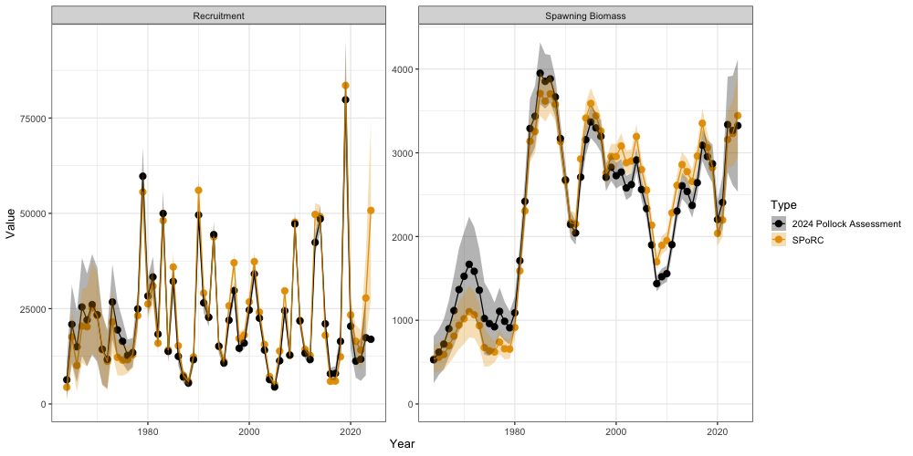
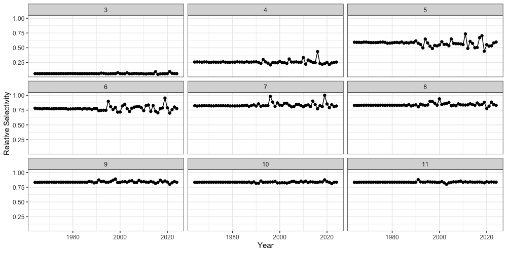

Case Study: Eastern Bering Sea Walleye Pollock
f_single_region_ebs_pollock_case_study.RmdOverview
This case study reproduces the 2024 eastern Bering Sea walleye
pollock assessment in SPoRC. Every structural choice below
follows the assessment rather than SPoRC’s defaults, and
the result is an exact bridge: spawning biomass and recruitment agree
with the ADMB model to within
percent, and the joint negative log likelihood is unchanged between the
two.
The model is single region, single sex, single season, with one fishery fleet and four survey indices:
| Index | Source | Likelihood | Selectivity |
|---|---|---|---|
| Fishery CPUE | Early fishery catch rates, 1965–1976 | Normal | Fishery |
| Bottom trawl (BTS) | Shelf bottom trawl survey, 1982– | Multivariate normal | Logistic, time varying, with a free age 1 |
| Acoustic trawl (ATS) | Acoustic trawl survey, 1994– | Lognormal | Non-parametric, random walk |
| Vessel of opportunity (AVO) | Acoustic backscatter, 2006– | Normal | Shared with the acoustic survey |
| Acoustic age 1 | Age 1 numbers from the acoustic survey | Lognormal | Shared with the acoustic survey |
The last of these is not a fifth survey. The pollock assessment fits
the acoustic survey’s age 1 abundance as its own likelihood component
(ats_age1_like) with its own catchability, separate from
the acoustic biomass index and from its age composition.
SPoRC attaches one index to one survey fleet, so
reproducing that component requires a fourth survey fleet restricted to
age 1.
Everything the case study needs, including the ADMB output it is
compared against, ships with the package in
sgl_rg_ebswp_data. The companion script that produced the
figures below is
dev/make_sporc_obj_figs/make_ebs_pollock_bridge_figs.R, and
the container itself is built by
dev/make_sporc_obj_figs/make_ebs_pollock_data_object.R.
library(SPoRC)
library(dplyr)
library(ggplot2)
data("sgl_rg_ebswp_data")
dat <- sgl_rg_ebswp_data
yrs <- dat$years
n_yrs <- length(yrs)
n_ages <- length(dat$ages)
n_srv <- dat$n_srv_fleetsThe object carries three kinds of content: the model inputs
(ObsCatch, WAA, ObsSrvIdx, and so
on), the ADMB maximum likelihood estimate in dat$mle, used
both as a starting point and to verify the objective before any
optimization, and the ADMB output in dat$admb, which is the
comparison target.
names(dat$mle)
#> [1] "Fmort" "Rec" "log_initdevs" "steepness" "ln_global_R0"
#> [6] "pars_fsh" "devs_fsh" "pars_ats" "devs_ats" "bts_b50_dev"
#> [11] "bts_k_dev" "bts_age1_dev"
names(dat$admb)
#> [1] "SSB" "Rec" "NAA" "Fmort" "sel_fsh" "sel_bts"
#> [7] "sel_ats" "eb_ats" "pred_avo" "pred_cpue" "tot_like"Model dimensions
Because the model is single region and single sex, the population, region, season and sex subscripts used in the model equations all collapse to one, and are dropped from the notation below.
input_list <- Setup_Mod_Dim(
years = yrs,
ages = dat$ages,
lens = NA,
n_regions = dat$n_regions,
n_sexes = dat$n_sexes,
n_fish_fleets = dat$n_fish_fleets,
n_srv_fleets = n_srv,
n_seas = dat$n_seas,
n_pop = dat$n_pop,
natal_region = dat$natal_region,
verbose = FALSE
)Recruitment
Pollock recruitment follows a Ricker stock recruit relationship with a one year lag, so recruitment in year depends on spawning biomass in year :
with
and
reparameterized through steepness
and unfished recruitment
.
Steepness is estimated under a beta prior. In the 2024 assessment that
prior sits on the unrescaled
support and is symmetric, so its center is
rather than the
its steepnessprior constant declares:
Three separate penalties act on recruitment, each with its own variance. The stock recruit residuals are penalized over the years 1978 to 2022, excluding 1979:
The initial numbers at age carry weight and the recruitment level weight , which map onto . The second recruitment statement is a sum of squares on all log recruitments about their own mean:
Initial numbers at age are free parameters
(init_age_strc = 4) rather than derived from an
equilibrium, and their penalty is centered on their own mean.
inv_steepness <- function(s) qlogis((s - 0.2) / 0.8)
input_list <- Setup_Mod_Rec(
input_list = input_list,
# SR_ref_yr points spawning biomass per recruit at terminal year biologicals,
# which is what the assessment's unfished spawning biomass uses.
rec_model = "ricker_rec",
rec_lag = 1,
SR_ref_yr = n_yrs,
# do_rec_bias_ramp = 0 sets the ramp to 1 throughout, so the recruitment
# penalty is centered on -sigmaR^2/2, which is the assessment's +sigmaRsq/2 on the
# residual.
do_rec_bias_ramp = 0,
sigmaR_switch = 1,
sigmaR_spec = "fix",
# The stock recruit residuals use sigr, fixed at 1. The initial ages carry
# weight 0.1, which is sigma = 1/sqrt(2w).
ln_sigmaR = array(c(log(1 / sqrt(0.2)), log(1)), dim = c(2, 1, 1)),
init_age_strc = 4,
equil_init_age_strc = 2,
RecDevs_pen_center = "fixed",
InitDevs_pen_center = "own_mean",
ln_global_R0 = dat$mle$ln_global_R0,
t_spawn = (4 - 1) / 12,
use_rinit = 0,
dont_est_recdev_last = 0,
steepness_h = array(inv_steepness(dat$mle$steepness), dim = c(1, 1)),
h_spec = "est_shared_pop_r",
Use_h_prior = 1,
h_prior = data.frame(pop = 1, region = 1, mu = 0.5, sd = 0.09, lb = 0, ub = 1),
Use_rec_level_pen = 1,
rec_level_pen_sigma = 1 / sqrt(2),
rec_level_pen_center = "own_mean"
)Biological dynamics
Natural mortality is fixed and age specific:
The assessment carries a different weight at age matrix for spawning
biomass, for catch, and for each survey index, which SPoRC
supports through WAA, WAA_fish and
WAA_srv. Spawning biomass is therefore
with spawning in March, .
Two composition conventions matter here. The 2024 assessment weights
the multinomial by the raw observed composition and places its
constant inside the logarithm only, which is
comp_const_obs = 0. SPoRC’s default instead
weights by
,
which is the unbiased choice since its stationary point is
,
but it is a different model: on this bridge it moves estimated spawning
biomass by a median of 8.8 percent.
fix_natmort <- array(0, dim = c(1, 1, n_yrs, n_ages, 1))
fix_natmort[, , , 1, ] <- 0.9
fix_natmort[, , , 2, ] <- 0.45
fix_natmort[, , , -c(1, 2), ] <- 0.3
input_list <- Setup_Mod_Biologicals(
input_list = input_list,
WAA = dat$WAA,
WAA_fish = dat$WAA_fish,
WAA_srv = dat$WAA_srv,
MatAA = dat$MatAA,
fit_lengths = 0,
M_spec = "fix",
Fixed_natmort = fix_natmort,
# addtocomp must stay strictly positive, since at zero the offset term
# evaluates 0*log(0).
addtocomp = 1e-3,
comp_const_obs = 0,
addtosrvidx = 0.01,
addtofishidx = 0
)Movement and tagging
The model is single region, so movement is an identity matrix and no tagging data are used. Both still have to be declared.
input_list <- Setup_Mod_Movement(
input_list = input_list,
use_fixed_movement = 1,
Fixed_Movement = NA,
do_recruits_move = 0
)
input_list <- Setup_Mod_Tagging(input_list = input_list, use_conv_fish_tagging = 0)Catch and fishing mortality
The 2024 assessment has no mean fishing mortality parameter:
is a free annual value penalized about its own mean. In
SPoRC that is ln_F_mean_spec = "fix", which
pins the mean at zero and maps it off so the deviations carry all of
,
together with Fdev_pen_center = "own_mean":
Catch is fit lognormally with a fixed standard deviation of .
input_list <- Setup_Mod_Catch_and_F(
input_list = input_list,
ObsCatch = dat$ObsCatch,
UseCatch = dat$UseCatch,
Use_F_pen = 1,
Fdev_model = "iid",
Fdev_pen_center = "own_mean",
ln_F_mean_spec = "fix",
sigmaF_spec = "fix",
ln_sigmaF = array(log(1 / sqrt(2)), dim = c(1, 1, 1)),
sigmaC_spec = "fix",
ln_sigmaC = array(log(0.05), dim = c(1, n_yrs, 1, 1))
)Fishery index and compositions
The early fishery CPUE series covers twelve years and is fit on the arithmetic scale with a normal likelihood. Fishery age compositions are multinomial.
input_list <- Setup_Mod_FishIdx_and_Comps(
input_list = input_list,
ObsFishIdx = dat$ObsFishIdx,
ObsFishIdx_SE = dat$ObsFishIdx_SE,
UseFishIdx = dat$UseFishIdx,
ObsFishAgeComps = dat$ObsFishAgeComps,
UseFishAgeComps = dat$UseFishAgeComps,
ISS_FishAgeComps = dat$ISS_FishAgeComps,
ObsFishLenComps = array(NA_real_, dim = c(1, n_yrs, 1, length(input_list$data$lens), 1, 1)),
UseFishLenComps = array(0, dim = c(1, n_yrs, 1, 1)),
ISS_FishLenComps = array(0, dim = c(1, n_yrs, 1, 1, 1)),
fish_idx_type = "biom",
FishIdx_LikeType = "normal",
FishAgeComps_LikeType = "Multinomial",
FishLenComps_LikeType = "none",
FishAgeComps_Type = "agg_Year_1-terminal_Fleet_1",
FishLenComps_Type = "none_Year_1-terminal_Fleet_1"
)Survey indices and compositions
Each survey index has its own error structure. The bottom trawl index is fit with a full covariance matrix, which enters as
with
supplied through SrvIdx_Cov. The acoustic index and the age
1 index are lognormal, and the vessel of opportunity index is
normal.
Two indexing conventions are needed here. srv_idx_ages
restricts fleet 4 to age 1, which is what makes it the age 1 index
rather than a biomass index. And the 2024 assessment normalizes the
acoustic compositions over ages 2–15 only, which is
SrvAgeComps_bins.
input_list <- Setup_Mod_SrvIdx_and_Comps(
input_list = input_list,
ObsSrvIdx = dat$ObsSrvIdx,
ObsSrvIdx_SE = dat$ObsSrvIdx_SE,
UseSrvIdx = dat$UseSrvIdx,
ObsSrvAgeComps = dat$ObsSrvAgeComps,
ISS_SrvAgeComps = dat$ISS_SrvAgeComps,
UseSrvAgeComps = dat$UseSrvAgeComps,
ObsSrvLenComps = array(NA_real_, dim = c(1, n_yrs, 1, length(input_list$data$lens), 1, n_srv)),
UseSrvLenComps = array(0, dim = c(1, n_yrs, 1, n_srv)),
ISS_SrvLenComps = array(0, dim = c(1, n_yrs, 1, 1, n_srv)),
srv_idx_type = c("biom", "biom", "biom", "abd"),
# Fleet 4 is the acoustic survey's age 1 abundance.
srv_idx_ages = list(NULL, NULL, NULL, 1),
SrvAgeComps_bins = list(NULL, 2:15, NULL, NULL),
SrvIdx_LikeType = c("mvn", "lognormal", "normal", "lognormal"),
SrvIdx_Cov = list(dat$SrvIdx_Cov, NULL, NULL, NULL),
SrvAgeComps_LikeType = c("Multinomial", "Multinomial", "none", "none"),
SrvLenComps_LikeType = rep("none", n_srv),
SrvAgeComps_Type = c("agg_Year_1-terminal_Fleet_1", "agg_Year_1-terminal_Fleet_2",
"none_Year_1-terminal_Fleet_3", "none_Year_1-terminal_Fleet_4"),
SrvLenComps_Type = paste0("none_Year_1-terminal_Fleet_", 1:n_srv),
t_srv = array(c(0.5, 0.5, 0, 0.5), dim = c(1, 1, n_srv))
)Fishery selectivity and catchability
Fishery selectivity is non-parametric on the log scale, with one coefficient per age up to age 11 and a flat tail shared across ages 12–15, evolving as a random walk:
fishsel_rw_init_sigma = NA makes the walk start at zero
under its own sigma rather than free, because
norm2(sel_devs_fsh) in the 2024 assessment weights every
increment equally, including the first.
input_list <- Setup_Mod_Fishsel_and_Q(
input_list = input_list,
fish_sel_model = "nonparlog_Fleet_1",
cont_tv_fish_sel = "rw_Fleet_1",
fish_sel_blocks = "none_Fleet_1",
fish_q_blocks = "none_Fleet_1",
fish_fixed_sel_pars_spec = "est_all",
fish_q_spec = "est_all",
fishsel_pe_pars_spec = "fix",
fish_sel_devs_spec = "est_all",
fishsel_rw_init_sigma = NA,
# Nested [[fleet]][[block]] and then the bin groups. Ages 12-15 share one
# coefficient, and the deviations share the same grouping so they are not
# estimated on bins with no free coefficient.
fish_sel_nonpar_est_bins = list(list(list(1, 2, 3, 4, 5, 6, 7, 8, 9, 10, 11, 12:15))),
fishsel_devs_shared_bins = list(1, 2, 3, 4, 5, 6, 7, 8, 9, 10, 11, 12:15)
)Survey selectivity and catchability
The three survey selectivity forms differ. The bottom trawl survey is logistic with a year specific midpoint and slope plus a free annual age 1 value:
In the 2024 assessment the slope and midpoint are the deviations; there is no base pair, so keeping a base alongside free deviation levels would be exactly redundant. That is handled in the mapping section below.
The acoustic survey is non-parametric with coefficients over ages 2–8 and a flat tail, evolving as a random walk, and the vessel of opportunity index shares both its coefficients and its deviations. Catchability is arithmetic for the trawl survey, geometric for the age 1 index, and estimated for the other two.
Because enters only as a multiplicative scalar on the predicted index, a fleet that needs no prior on it can have it solved for rather than searched over. Writing for the unscaled index , the lognormal maximum likelihood value of at any given value of the remaining parameters is the geometric mean of the observed to predicted ratio:
which is srv_q_type = "geo". The expression above is the
exact maximum likelihood value only when the index standard errors are
constant over the fitted years, which holds for the age 1 index.
"arith" is the corresponding ratio of means,
. It is what the 2024
assessment applies to the trawl survey and is used here for that
reason.
srvsel_pe_wt = c(0, 0, 0, 0) is what keeps the survey
deviations from being constrained twice. SPoRC normally
gives selectivity deviations a distribution of their own, an iid or
random walk density evaluated with the process error sigmas, and adds
that to the joint negative log-likelihood. The 2024 assessment does no
such thing for its surveys. It constrains them with the explicit shape
penalties set in the weighting section below, which act on log
selectivity over restricted age ranges and with a fixed predecessor
rather than on the deviations themselves. A weight of zero makes the
objective skip the process error likelihood for
ln_srvsel_devs entirely, so the deviations remain estimated
parameters but enter the objective only through the data and those
penalties. This is also why srvsel_pe_pars_spec is
"fix": with the weight at zero the sigmas never reach the
objective and would have no gradient.
The fishery runs the other way round. Its
norm2(sel_devs_fsh) term is a random walk density
up to a constant, so fishsel_pe_wt is left at its default
of one and fishsel_pe_pars is instead fixed at
so that
reproduces the unweighted sum of squares.
The weight applies only to the main deviations. The bin override deviations carry their own process error, which no weight multiplies, so the trawl survey’s free annual age 1 value keeps its random walk density with the sigma fixed to give the assessment’s weight of 8.
input_list <- Setup_Mod_Srvsel_and_Q(
input_list = input_list,
srv_sel_model = c("logist1_Fleet_1", "nonparlog_Fleet_2", "nonparlog_Fleet_3", "logist1_Fleet_4"),
cont_tv_srv_sel = c("iid_Fleet_1", "rw_Fleet_2", "rw_Fleet_3", "none_Fleet_4"),
srv_sel_blocks = paste0("none_Fleet_", 1:n_srv),
srv_q_blocks = paste0("none_Fleet_", 1:n_srv),
srv_fixed_sel_pars_spec = c("est_all", "est_all", "est_shared_f_2", "fix"),
srv_sel_devs_spec = c("est_all", "est_all", "est_shared_f_2", "fix"),
srvsel_pe_pars_spec = rep("fix", n_srv),
srv_q_spec = rep("est_all", n_srv),
srv_q_type = c("arith", "est", "est", "geo"),
srvsel_pe_wt = c(0, 0, 0, 0),
srv_sel_nonpar_est_bins = list(NULL,
list(list(1, 2, 3, 4, 5, 6, 7, 8:15)),
list(list(1:2, 3, 4, 5, 6, 7, 8:15)),
NULL),
srvsel_devs_shared_bins = list(1, 2, 3, 4, 5, 6, 7, 8:15),
# the trawl survey's age 1 is a free annual value, not the logistic's
srv_sel_bin_dev_bins = list(1, NULL, NULL, NULL),
cont_tv_srvsel_bin_devs = c("rw", "none", "none", "none"),
t_srv = array(c(0.5, 0.5, 0, 0.5), dim = c(1, 1, n_srv))
)Weighting and selectivity penalties
Beyond the data weights, the 2024 assessment carries a set of shape penalties on selectivity. The fishery has a dome penalty over ages 6–12, curvature at the first year and every change year, and a random walk penalty whose standard deviation is except in two years where it opens to . The trawl survey has a year to year difference penalty over ages 3–14, and the acoustic survey a dome penalty over ages 5–8:
The stock recruit residual weights select the years the Ricker penalty applies to, and the terminal acoustic age 1 observation is dropped.
Wt_Rec <- array(0, dim = dim(input_list$par$ln_RecDevs))
Wt_Rec[1, 1, which(yrs %in% dat$yrs_srr)] <- 1
Wt_SrvIdx <- array(1, dim = c(1, n_yrs, 1, n_srv))
Wt_SrvIdx[1, max(which(yrs %in% dat$yrs_ats)), 1, 4] <- 0
yrs_ch_f <- dat$yrs_sel_ch_fsh
sig_ch <- rep(0.5, length(yrs_ch_f))
sig_ch[55:56] <- 1.9
curve_wt <- rep(0, n_yrs)
curve_wt[1] <- 1 / length(yrs_ch_f)
curve_wt[match(yrs_ch_f, yrs)] <- 1 / length(yrs_ch_f)
rw_wt <- rep(0, n_yrs)
rw_wt[match(yrs_ch_f, yrs)] <- 1 / (2 * sig_ch^2)
fish_pen_wts <- list(smooth_bin_diff = 3, smooth_bin_curve = curve_wt,
smooth_yr_diff = rw_wt, normalize = FALSE,
bin_range = list(smooth_bin_diff = c(6, 12)))
# The trawl difference runs from 1982, whose predecessor the assessment fixes at one.
bts_rw <- rep(0, n_yrs)
bts_rw[match(1982:2024, yrs)] <- 2
yrs_ch_a <- dat$yrs_sel_ch_ats
ats_curve <- rep(0, n_yrs)
ats_curve[match(yrs_ch_a, yrs)] <- 1
ats_rw <- rep(0, n_yrs)
ats_rw[match(yrs_ch_a, yrs)] <- 1 / (2 * 0.138^2)
# The acoustic shape penalty applies only from the survey's first year.
ats_shape <- rep(0, n_yrs)
ats_shape[match(1994:2024, yrs)] <- 1
srv_pen_wts <- list(
list(smooth_yr_diff = bts_rw, normalize = FALSE, yr_diff_ref = 0,
bin_range = list(smooth_yr_diff = c(3, 14))),
list(smooth_bin_diff = ats_shape, smooth_bin_curve = ats_curve,
smooth_yr_diff = ats_rw, normalize = FALSE,
bin_range = list(smooth_bin_diff = c(5, 8))),
# the vessel of opportunity index shares the acoustic curve, so it is not
# penalized twice
list(),
list()
)
input_list <- Setup_Mod_Weighting(
input_list = input_list,
fish_sel_pen_wts = fish_pen_wts,
srv_sel_pen_wts = srv_pen_wts,
Wt_Catch = 1,
Wt_FishIdx = 1,
Wt_SrvIdx = Wt_SrvIdx,
Wt_Rec = Wt_Rec,
Wt_Init_Rec = 1,
Wt_F = 1,
Wt_Tagging = 0,
Wt_FishAgeComps = array(1, dim = c(1, n_yrs, 1, 1, 1)),
Wt_FishLenComps = array(1, dim = c(1, n_yrs, 1, 1, 1)),
Wt_SrvAgeComps = array(1, dim = c(1, n_yrs, 1, 1, n_srv)),
Wt_SrvLenComps = array(1, dim = c(1, n_yrs, 1, 1, n_srv))
)
data <- input_list$data
parameters <- input_list$par
mapping <- input_list$mapMapping
The setup functions already leave a parametric fleet’s unused deviation slots and a fleet with no time variation unmapped. What remains is the data window, since deviations before a survey exists have nothing to inform them, and the deviation groupings.
SPoRC parameterizes selectivity deviations as levels
while the 2024 assessment uses increments. The two are equivalent, but
the first year’s level is redundant with the coefficients and has to be
held at zero, and bins within a group must move together.
est_shared_b would share a group across years as well,
making selectivity time invariant, so the maps are built explicitly.
i_bts_all <- which(yrs >= 1982)
map_srvdev <- array(as.numeric(mapping$ln_srvsel_devs), dim = dim(parameters$ln_srvsel_devs))
map_srvdev[1, -i_bts_all, , 1, 1] <- NA
mapping$ln_srvsel_devs <- factor(map_srvdev)
data$map_ln_srvsel_devs <- map_srvdev
build_dev_map <- function(dim_arr, fleet, dev_years, groups) {
m <- array(NA_real_, dim = dim_arr)
k <- 1
for(y in dev_years) {
for(g in groups) {
m[1, y, g, 1, fleet] <- k
k <- k + 1
}
} # end y loop
m
}
# The assessment applies sel_devs_fsh(ii) going from yrs_ch_fsh(ii) to the NEXT year, so
# the 59 changes land on 1966:2024 and log selectivity is identical in 1964 and
# 1965.
grp_f <- list(1, 2, 3, 4, 5, 6, 7, 8, 9, 10, 11, 12:15)
map_fishdev <- build_dev_map(dim(parameters$ln_fishsel_devs), 1, match(1966:2024, yrs), grp_f)
mapping$ln_fishsel_devs <- factor(map_fishdev)
data$map_ln_fishsel_devs <- map_fishdev
# The acoustic survey's deviations sit on ages 2-8 with 9-15 following age 8;
# age 1 never receives one.
grp_a <- list(2, 3, 4, 5, 6, 7, 8:15)
map_ats <- array(as.numeric(mapping$ln_srvsel_devs), dim = dim(parameters$ln_srvsel_devs))
map_ats[1, , , 1, 2:3] <- NA
k <- max(map_ats, na.rm = TRUE) + 1
for(y in match(yrs_ch_a, yrs)) {
for(g in grp_a) {
map_ats[1, y, g, 1, 2] <- k
k <- k + 1
}
} # end y loop
# The vessel of opportunity index is predicted from the acoustic selectivity
# itself, so it shares the deviations, not just the coefficients.
map_ats[1, , , 1, 3] <- map_ats[1, , , 1, 2]
mapping$ln_srvsel_devs <- factor(map_ats)
data$map_ln_srvsel_devs <- map_ats
# Acoustic age 1 log selectivity is held at zero rather than estimated, and the
# trawl survey has no base logistic pair, so its base is held at zero and the
# deviations carry the whole curve.
map_srvpar <- array(as.numeric(mapping$srv_fixed_sel_pars), dim = dim(parameters$srv_fixed_sel_pars))
map_srvpar[1, 1, 1, 1, 2:3] <- NA
map_srvpar[1, 1:2, 1, 1, 1] <- NA
mapping$srv_fixed_sel_pars <- factor(map_srvpar)
# The age 1 series' penalty weight is fixed at 8 rather than estimated.
mapping$srvsel_bin_devs_pe_pars <- factor(rep(NA, length(parameters$srvsel_bin_devs_pe_pars)))
map_bindev <- array(as.numeric(mapping$ln_srvsel_bin_devs), dim = dim(parameters$ln_srvsel_bin_devs))
map_bindev[1, -i_bts_all, , 1, 1] <- NA
mapping$ln_srvsel_bin_devs <- factor(map_bindev)
data$map_ln_srvsel_bin_devs <- map_bindevOne penalty has no counterpart in the setup functions. Because
rescaled by its own mean is invariant to shifting
and
together, the level has to be pinned or the likelihood is flat along it.
That is what the 2024 assessment’s avgsel penalty does:
data$Use_fish_selex_penalty <- 1
fish_pen <- data.frame(region = 1, fleet = 1, block = 1, sex = 1, wt = 10)
fish_pen$par <- list(1:12)
data$fish_selex_penalty <- fish_pen
data$Use_srv_selex_penalty <- 1
srv_pen <- data.frame(region = 1, fleet = 2, block = 1, sex = 1, wt = 10)
srv_pen$par <- list(2:8)
data$srv_selex_penalty <- srv_penStarting at the ADMB estimate
Before optimizing anything, it is worth checking that the objective is reproduced at a known point. Setting every parameter to the pollock maximum likelihood estimate and evaluating there separates a specification error from an optimization difference: if the population and the likelihood agree at the ADMB solution, the two models are the same model.
Most parameters can simply be assigned. Recruitment cannot, because
the deviations are stock recruit residuals and each year’s residual
depends on the previous year’s spawning biomass, so they are solved by
forward substitution. The catchabilities are recovered from the ratio of
the ADMB predicted index to SPoRC’s, which is exact because
enters multiplicatively.
parameters$ln_F_devs[1, , 1, 1] <- log(dat$mle$Fmort)
parameters$ln_InitDevs[1, 1, , ] <- dat$mle$log_initdevs
parameters$fish_fixed_sel_pars[1, 1:n_ages, 1, 1, 1] <- dat$mle$pars_fsh
parameters$ln_fishsel_devs[1, 1:n_yrs, , 1, 1] <- dat$mle$devs_fsh
for(f in 2:3) {
parameters$srv_fixed_sel_pars[1, 1:n_ages, 1, 1, f] <- dat$mle$pars_ats
parameters$ln_srvsel_devs[1, 1:n_yrs, , 1, f] <- dat$mle$devs_ats
} # end f loop
parameters$srv_fixed_sel_pars[1, 1:2, 1, 1, 1] <- 0
parameters$ln_srvsel_devs[1, 1:n_yrs, 1, 1, 1] <- dat$mle$bts_b50_dev
parameters$ln_srvsel_devs[1, 1:n_yrs, 2, 1, 1] <- dat$mle$bts_k_dev
parameters$ln_srvsel_bin_devs[1, 1:n_yrs, 1, 1, 1] <- dat$mle$bts_age1_dev
parameters$fishsel_pe_pars[1, , 1, 1] <- log(1 / sqrt(2))
parameters$srvsel_bin_devs_pe_pars[1, , 1, 1] <- log(1 / sqrt(16))
obj <- fit_model(data, parameters, mapping, do_optim = FALSE, silent = TRUE)
# Recruitment deviations solved by forward substitution.
free <- obj$par
idx_rec <- which(names(free) == "ln_RecDevs")
for(it in 1:40) {
r <- obj$report(free)
gap <- log(dat$mle$Rec) - log(as.vector(r$Rec[1, 1, 1:n_yrs]))
if(max(abs(gap)) < 1e-12) break
free[idx_rec] <- free[idx_rec] + gap
} # end it loop
# Catchabilities recovered from the ratio of predicted indices.
r <- obj$report(free)
i_ats <- which(yrs %in% dat$yrs_ats)
i_avo <- which(yrs %in% dat$yrs_avo)
idx_q <- which(names(free) == "ln_srv_q")
free[idx_q] <- free[idx_q] + log(c(
mean(dat$admb$eb_ats / as.vector(r$PredSrvIdx[1, 1, i_ats, 1, 2])),
mean(dat$admb$pred_avo / as.vector(r$PredSrvIdx[1, 1, i_avo, 1, 3]))))
idx_fq <- which(names(free) == "ln_fish_q")
free[idx_fq] <- free[idx_fq] + log(mean(dat$admb$pred_cpue / as.vector(r$PredFishIdx[1, 1, 2:13, 1, 1])))At that point every reported quantity agrees with the ADMB model to numerical precision, and the gradient is already near zero:
fishery selectivity max pct diff: 4.8e-13
trawl selectivity max pct diff: 1.4e-13
numbers at age max pct diff: 1.2e-11
spawning biomass max pct diff: 2.3e-12
jnLL at the pollock MLE: 1547.851
max |gradient| there : 2.7e-05Fitting and comparison
Optimizing from that point moves nothing, which is the expected result when a model is already at its own optimum.
parameters2 <- obj$env$parList(free)
est <- fit_model(data, parameters2, mapping, do_optim = TRUE, newton_loops = 2, silent = TRUE)
est$sdrep <- RTMB::sdreport(est)free parameters: 1207
final jnLL: 1547.851 max |gradient|: 1.4e-11Spawning biomass and recruitment are compared below. Because the two series overplot exactly, the percent difference needs its own panel to be readable at all; its axis is in units of percent.
| Quantity | Median difference | Maximum difference |
|---|---|---|
| Spawning biomass | % | % |
| Recruitment | % | % |

Time varying fishery selectivity is reproduced as well. Selectivity in this model can exceed one, so the values are normalized to their maximum to make the shape readable.
